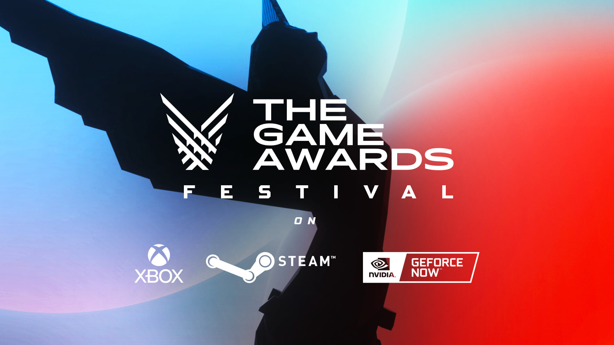

GOTY" stands for "Game of the Year," and it's a prestigious award given to a video game that is considered the best overall game of a specific year. Game of the Year awards are typically presented by various organizations within the gaming industry, including gaming publications, websites, and industry associations.
2014
Dragon Age: Inquisition" won several Game of the Year awards in 2014 due to its exceptional storytelling, immersive world-building, and innovative gameplay. The game offered a rich fantasy world, a compelling storyline with branching narratives, well-developed characters, and strategic combat. It was also praised for its stunning visuals, attention to detail, and expansive content. The positive reception from both critics and players, along with its impact on the RPG genre, solidified its place as a Game of the Year winner in 2014.
2015
The Witcher 3: Wild Hunt" won multiple Game of the Year awards in 2015 due to its exceptional combination of an immersive open world, a deep and emotionally engaging narrative, complex characters, and meaningful player choices. The game's high-quality voice acting, challenging combat, stunning visuals, and expansion packs further contributed to its critical acclaim. "The Witcher 3" received widespread recognition from both critics and players and had a significant cultural impact beyond gaming, solidifying its position as a Game of the Year winner in 2015

2016
Overwatch" won several Game of the Year (GOTY) awards in 2016 due to its unique and compelling combination of team-based multiplayer gameplay, colorful and diverse characters, accessible design, and a strong sense of community. The game's emphasis on teamwork, strategy, and individual hero abilities appealed to a wide range of players, making it a highly accessible and enjoyable experience for both casual and competitive gamers. Additionally, Blizzard's commitment to regular updates, balance adjustments, and the creation of a vibrant esports scene helped maintain the game's popularity and secured its status as a Game of the Year winner in 2016
2017
The Legend of Zelda: Breath of the Wild" won numerous Game of the Year awards in 2017 due to its groundbreaking approach to open-world game design. The game redefined player freedom, allowing them to explore the vast and beautifully crafted world of Hyrule in any order they chose. Its emphasis on discovery, problem-solving, and interactive physics systems set a new standard for open-world games. The game's immersive storytelling, memorable characters, and the sheer scale of its world captivated players and critics alike. "Breath of the Wild" represented a significant leap forward for the "Legend of Zelda" series and the gaming industry as a whole, making it a clear choice for Game of the Year in 2017.